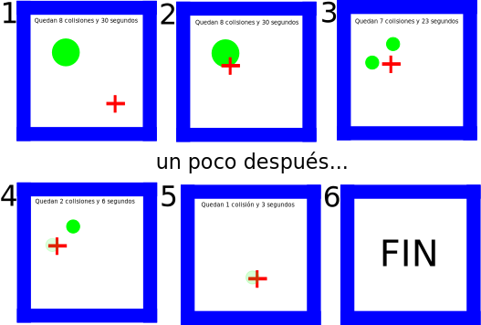

Examen final
Convocatoria ordinaria
Programación de Videojuegos en Lenguajes Interpretados
10/1/2019
Tareas
A partir de la plantilla base, se harán las siguientes modificaciones hasta conseguir un nuevo juego que funcionará sobre la misma plantilla. Es decir, sólo hay que hacer cambios en el código JavaScript, no en la estructura que se provee.
Escenario (1.5 puntos)
Se creará un escenario con bloques que formen una habitación en dos dimensiones cerrada, como en el ejemplo.
En todo momento se mostrará al jugador el tiempo de juego restante y el número de colisiones que aún quedan por hacer.
Ejemplo de escenario
Física (1.5 puntos)
Dentro del escenario habrá, inicialmente, una esfera que se moverá con velocidad constante, rebotando dentro de las paredes del escenario.
Además, el jugador estará representado por una cruz.
Entrada (1 puntos)
El personaje podrá moverse con las teclas del cursor hacia arriba, abajo, izquierda y derecha. Se valorará la calidad de esta implementación.
Colisiones (2 puntos)
Cuando la cruz colisione con la bola, está se dividirá en dos bolas de la mitad del tamaño original.
La podrá dividirse tres veces. Una vez dividida tres veces, otra colisión eliminará la bola completamente.
Animación (1.5 punto)
La cruz que represente al jugador tendrá dos animaciones: una para el estado estático, y otra para el estado de moverse.
Las bolas tendrán tres animaciones: una para el estado de moverse, otra para dividirse y otra para desaparecer.
Sonido (0,5 puntos)
El juego tendrá dos sonidos, uno para la colisión en la que la bola se divide, y otro para la colisión en la que la bola se elimina).
Juego (2 puntos)
Si en 30 segundos el jugador no consigue hacer desaparecer todas las bolas, habrá perdido. En este caso, hay que avisar al jugador con un mensaje en la pantalla.
Cuando el jugador haya perdido, ya no se moverán las bolas ni jugador. El juego podrá reiniciarse con la tecla espacio.
Si el jugador elimina todas las bolas dentro del tiempo establecido, habrá ganado y se informará con un texto en pantalla. En este caso, ya no se podrá seguir moviendo al jugador y el juego podrá reiniciarse con la tecla espacio.
Evaluación
El examen tendrá una nota de 0 a 10, siendo necesario un 5 para aprobar.
Si el código del examen no se ejecuta (error de sintaxis, solución muy lejana a lo pedido), estará suspenso.
Cada apartado recibirá, como máximo, el valor indicado. Se valorará el estilo, el uso correcto de construcciones y se tendrá en cuenta la solución en general (no sólo los apartados independientemente).
Es decir, a partir de una versión que funcione, se tendrá en cuenta la calidad del código, tanto la arquitectura como la corrección de la implementación de las funciones.
Ejecución
El código se ejecutará igual que se ha hecho durante el curso, ejecutando los comandos:
Se espera que, al ejecutarse estos dos comandos, se abra automáticamente una ventana del navegador con la solución.
Entrega
La entrega se hará a través del Campus Virtual, en la entrega habilitada para tal propósito. Se debe subir un proyecto completo en un archivo comprimido, pero sin la carpeta node_modules. El proyecto deberá tener un archivo de texto con el nombre del alumno y su DNI. Un proyecto sin este archivo no será evaluado.
La entrega es individual.
Materiales
Se pueden usar todos los materiales disponibles (Internet, apuntes), excepto comunicación con otros compañeros o personas externas. Esto se considerará copia.
Copia
Cualquier intento fructuoso o infructuoso de copia supondrá la aplicación de la normativa de la asignatura y el suspenso de la convocatoria actual.